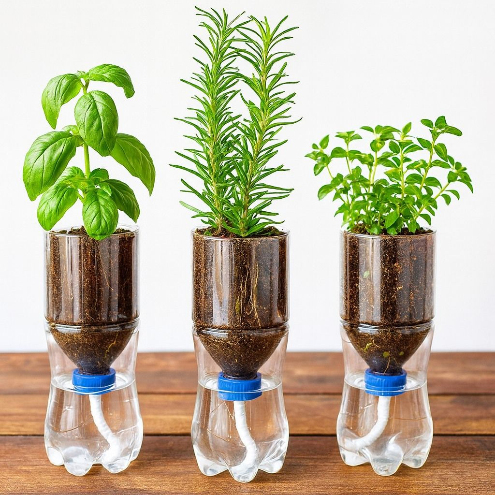
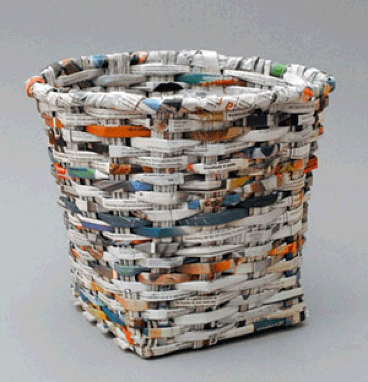
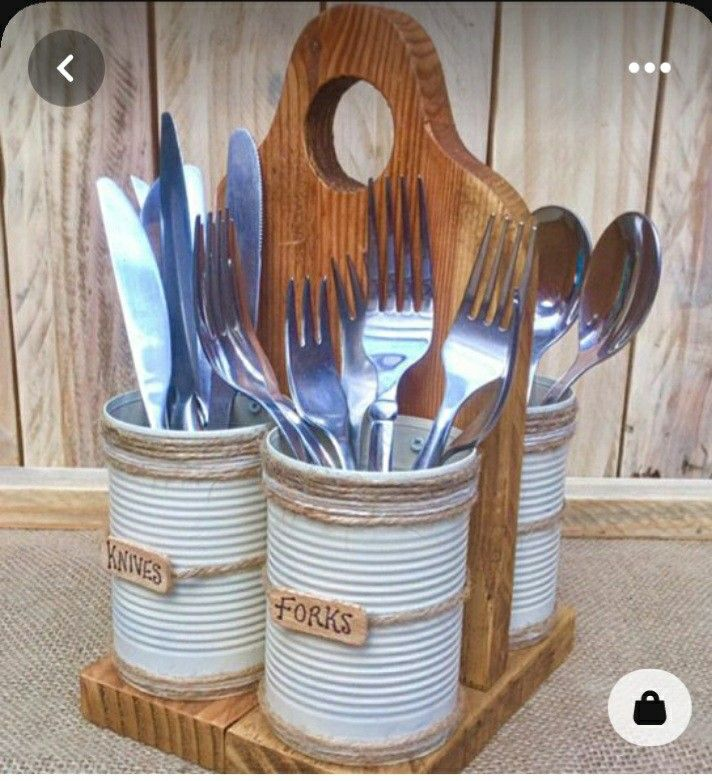
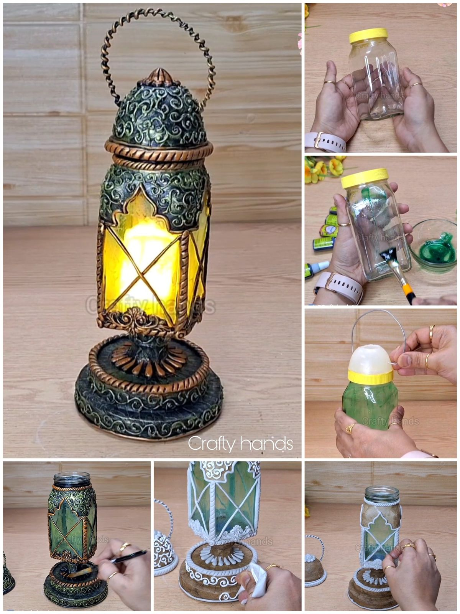
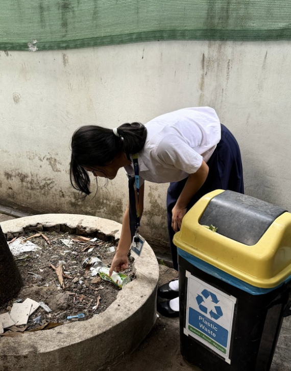
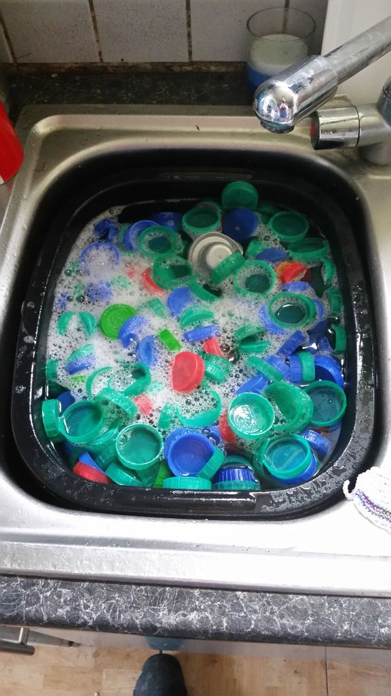
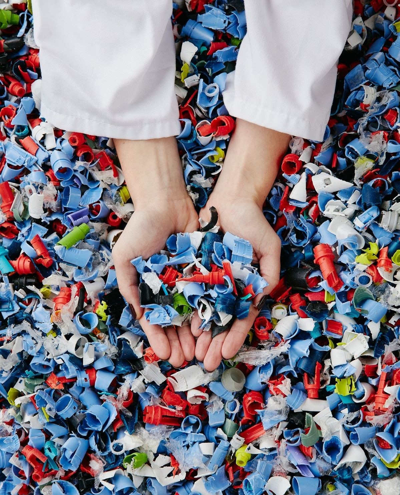
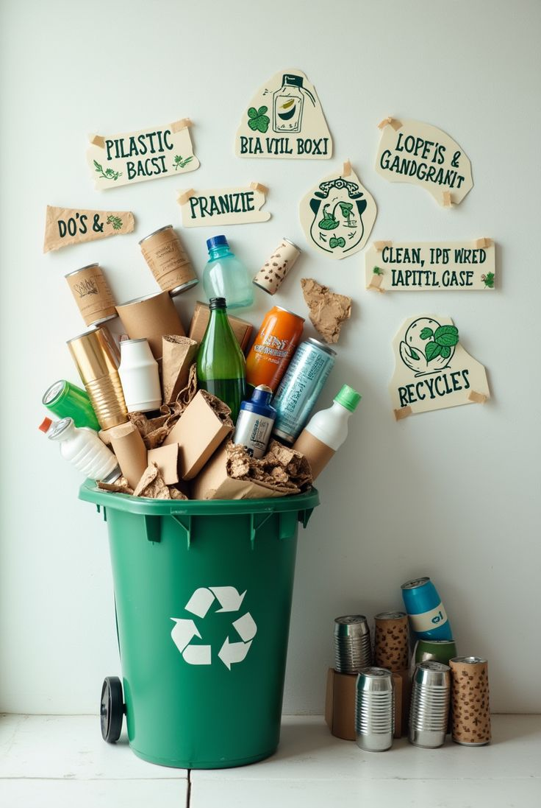

Reuse old plastic bottles to make beautiful plant pots.
Works by holding soil and supporting plant growth while helping manage water and nutrients.
They help plants grow by holding soil, water, and nutrients while supporting sustainable gardening when made from recycled plastic.

Reuse old paper to create a useful storage basket.
Folded or woven paper is shaped into a basket for holding lightweight items.
Reduces paper waste and provides an eco-friendly storage solution

Turn used tin cans into organizers for everyday items.
Cleaned tin cans are decorated and used to hold pens, forks, spoons, or other small objects.
Reuses metal waste and helps keep spaces organized.

Transform old glass jars into decorative lights.
A candle is placed inside the jar to produce a soft and warm light.
Reduces glass waste, adds decoration to any space, and provides simple, eco-friendly lighting.



